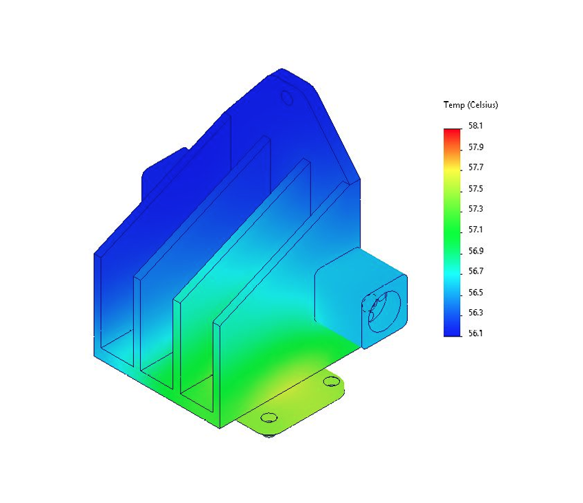

Summary
I designed a camera mounting bracket that provides both structural support and passive heat dissipation for an industrial vision system. The bracket needed to hold the camera rigidly while keeping junction temperature below thermal limits in elevated ambient conditions.
I initially focused on structural stiffness, and the first design significantly exceeded strength and vibration requirements but failed thermal limits during testing. I revised the design to function as an integrated heat sink and validated the final bracket through structural FEA, thermal modeling, simulation, and physical testing, confirming that it met both mechanical and thermal requirements.
Key Features
Dual-function camera bracket for structural support and passive cooling Machined aluminum design with fins to increase surface area for heat transfer Thermal and structural performance validated via simulation and physical testing

Structural
- Bracket must withstand loads from mounted cameras
- Surrounding vibrations must not resonate with the bracket
- Existing camera and yoke mounts must fit the bracket
Thermal
- Bracket must passively cool the heat from the bottom camera
- Junction temperature must be below 60 °C
- Bracket must operate from 0-40 °C (tested to 45 °C)
Concept design
I started the design by prioritizing structural stiffness and camera alignment under load. The initial concept used triangular bracing between the camera mounts and the yoke mounting bar, along with a vertical brace connecting the yoke to the base of the bracket. This layout handled the expected camera loads while maintaining compatibility with the existing camera mounts and yoke system.
Structural Analysis
Static FEA
I ran a static FEA to evaluate bracket strength under translational loads from the mounted cameras. The applied loads were based on the camera masses and expected accelerations in all three axes. The goal was to ensure stresses remained well below the material yield strength. The simulation showed that the maximum stress was more than 200 orders of magnitude below yield, indicating that the bracket significantly exceeded the strength requirements.
Frequency FEA
I performed a frequency analysis to check for potential resonance with surrounding vibrations from other machinery. The bracket was modeled with a remote mass representing the cameras, and the lowest natural frequency was identified. The target was to keep the resonance above 100 Hz. The analysis showed a lowest mode well above this threshold, confirming that the bracket would not resonate in the expected operating environment.
Structural Performance
Both static and frequency analyses showed that the initial bracket design exceeded structural requirements by a wide margin. The bracket was significantly overdesigned in terms of strength and stiffness, with large safety margins relative to both yield and vibration targets
Empirical Thermal Testing
I machined a simplified aluminum bracket and used it to evaluate thermal performance with the camera powered on. With the camera mounted to the bracket, I measured junction temperature over time in open air and used this data to determine the thermal time constant. I then measured junction temperature at that time under worst-case ambient conditions (45 °C) to estimate steady-state performance. The results showed that the initial design exceeded the allowable junction temperature, indicating that thermal requirements were not met.
Concept Design Review
The initial design significantly exceeded strength and vibration requirements but did not meet thermal limits.
Design Revision: Heat Sink
Based on these results, I revised the bracket to act as an integrated heat sink while preserving structural stiffness and mounting compatibility. I increased the base thickness to improve thermal conduction and added four fins to expand surface area for natural convection.
I re-ran static and frequency analyses on the revised heat sink design to confirm that the added material and fins did not compromise structural performance. The updated bracket continued to exceed strength requirements by a wide margin, and the lowest natural frequency remained well above the vibration threshold. These results confirmed that the thermal redesign preserved the original structural performance.
Thermal Modeling
Theoretical Thermal Model
[...]
Thermal FEA
[...]
Results
[...]